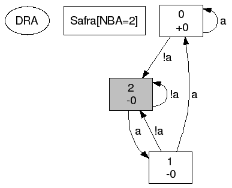
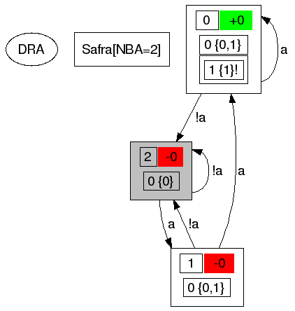
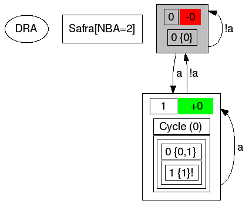

© 2005-2007 Joachim Klein <j.klein@ltl2dstar.de>
Contents
ltl2dstar ("LTL to deterministic Streett and Rabin automata") converts formulas in Linear Time Logic to deterministic ω-automata, specifically Rabin (DRA) and Streett automata (DSA).
It is an implementation of Safra's construction to translate nondeterministic Büchi automata (NBA) to deterministic Rabin automata, which has a worst-case complexity of 2O(n log n), with n being the number of states in the NBA. ltl2dstar employs optimizations and heuristics in an attempt to generate smaller automata in practice. It uses external LTL-to-Büchi translators for the conversion from LTL to NBA and can thus benefit from the state-of-the-art algorithms, implementations and optimizations available in this well researched area.
You can download the latest version of ltl2dstar at http://www.ltl2dstar.de/.
A Makefile for GNU Make and the GNU C++ compiler (versions 3.3 and higher) is provided in the src directory.
To compile, just type make in the src subdirectory. If everything works correctly, this will create the program file ltl2dstar, which you may copy to a convenient location. Later versions will probably be equipped to use autoconf as a build system.
# tar xzvf ltl2dstar-0.5.1.tar.gz
# cd ltl2dstar-0.5.1/src
# make (on Linux)
# gmake (on *BSD)
If you have problems compiling or have success compiling using another compiler, please drop me an e-mail.
ltl2dstar can be compiled using a GNU C++ version for Windows (like cygwin or mingw) or using current Microsoft Visual C++ compilers. You have to make sure that the src directory is in the include path.
A compiled binary for win32 systems is included in the ZIP archive.
To generate DRA/DSA for an LTL formula, ltl2dstar needs an external LTL-to-NBA translator. There are many different translators available, the following table gives an overview of translators that have been successfully used with ltl2dstar:
| Program | Interface | Remarks | |
|---|---|---|---|
| ltl2ba | download | spin | Written in C, uses alternating Büchi automata (recommended) |
| LTL->NBA | download | lbtt | Written in Python, using alternating Büchi automata and simulation relations. Use file script4lbtt.py as executable. |
| spin | download | spin | Full-featured model checker, can also be used to translate LTL formulas to NBA. Uses tableaux-based approach. |
| Modella | download | lbtt | Written in C, tries to produce "more deterministic" NBA. |
The programs can be interfaced with ltl2dstar either using the spin or the lbtt interface, as described later.
For a comparison of several LTL-to-NBA translators in the context of subsequent determinization, you are referred to the diploma thesis.
On invocation of ltl2dstar, you have to provide the path to the executable with a command line parameter of the following format:
interface can be either spin or lbtt, path is the path to the executable of the translator. parameters is optional and can be used to pass additional parameters (like enabling optimizations) as command line arguments to the translator. Take care to quote the whole command line argument if whitespace or characters interpreted by the shell occur.
Spin in /usr/bin/spin:
ltl2ba in current working directory
LTL->NBA in current working directory
Modella in current working directory with parameters '-r2 -e'
In these examples we will use ltl2ba as the LTL-to-NBA translator and assume that the executable is located in the current working directory.
ltl2dstar can output the generated automata either as a text file as described later or in a format that can be translated using the dot tool from the graphviz package.
The following commands put the formula "F G a" (Finally Globally a) in prefix format into the file FGa.ltl, translate this to a dot-representation of the automaton in file FGa.dot and then generate a PostScript file FGa.ps containing the automaton:
# echo "F G a" > FGa.ltl
# ltl2dstar --ltl2nba=spin:ltl2ba --stutter=no --output=dot FGa.ltl FGa.dot
# dot -Tps FGa.dot > FGa.ps
Note: We use the command line option --stutter=no to disable the use of the stuttering construction to get the automaton as it is generated by Safra's algorithm (see Stuttering).

The start state is shaded gray. The first number in the states is the name of the state, the second row is the acceptance signature for this state (see Semantics).
To see the Safra trees that make up the states of the automaton, we can use the command-line option --detailed-states=yes:
# echo "F G a" > FGa.ltl
# ltl2dstar --ltl2nba=spin:ltl2ba --stutter=no --output=dot --detailed-states=yes FGa.ltl FGa_detailed.dot
# dot -Tps FGa_detailed.dot > FGa_detailed.ps

The upper left number in the states is the name of the state, on the right of it is the acceptance signature for this state (see Semantics). Below this line, we can see the trees used in the construction process.
You can use '-' as the argument for the formula file to get the LTL formula directly from standard input (the console). Used as the argument for the output file, the automaton is output on the standard output.
Since version 0.5, ltl2dstar supports the stuttered translation from NBA to DRA. Provided that the formula is invariant under stuttering, this allows the merging of intermediate states that are redundant under stuttering, leading to potentially smaller automata.
For formulas/automata that are not completely insensitive to stuttering, we can determine the exact set of symbols for which stuttering is allowed and use the stuttered translation only on exactly these symbols. Determining the set of symbols for which stuttering is allowed is unfortunately PSPACE-complete and is not enabled by default (use --partial-stutter=yes to enable). The user of ltl2dstar should determine if the additional time needed to check the stutter invariance is an acceptable trade-off for getting potentially significantly smaller automata.
Stuttering for formulas not containing the NextStep operator (X) (which are completely insensitive to stuttering), is enabled by default (--stutter=no to disable).
# echo "F G a" > FGa.ltl
# ltl2dstar --ltl2nba=spin:ltl2ba --stutter=yes --output=dot --detailed-states=yes FGa.ltl FGa_stutter.dot
# dot -Tps FGa_detailed.dot > FGa_stutter.ps

Since version 0.5.1, ltl2dstar has a mechanism to call plugins at several points during the translation process such that users can perform additional analysis or output in a different format. Take a look inside the src/plugins directory for the interface and some sample plugins and uncomment the PLUGINS line in the Makefile to start experimenting. Activate a plugin using the --plugin command line option or using --output=plugin:name for an output plugin. There may be multiple --plugin specifications, the plugins are called in the order they are specified on the command line.
LTL formulas as used by ltl2dstar are in prefix format using the following grammar:
formula ::=
t // True
| f // False
| atomic-proposition
// propositional logic
| ! formula // Negation
| & formula formula // Conjunction (And)
| | formula formula // Disjunction (Or)
| i formula formula // Implication
| e formula formula // Equivalence
| ^ formula formula // Exclusive Or (XOR)
// temporal logic
| X formula // Next-Step
| F formula // Finally (Eventually)
| G formula // Globally (Always)
| U formula formula // Until (strong)
| V formula formula // Release (weak)
| W formula formula // Weak-Release
There is at least one space between all tokens in an LTL formula.
atomic-proposition can either be a string containing no whitespace (and not being one of the operators) and starting with a character from [a-zA-Z] or an arbitrary string enclosed in double quotes (").
| ltl2dstar notation | spin notation |
|---|---|
| & p0 "p1" | p0 && p1 |
| i G F a G F b | ([] <> a) -> ([] <> b) |
Deterministic Rabin (DRA) and Deterministic Streett Automata (DSA) are subtypes of Deterministic ω-Automata.
A Deterministic Rabin Automaton is a 5-tuple DRA=(Q, Σ, q0, δ, Acc), with:
Deterministic Streett-Automata are defined the same, they only differ in the semantic interpretation of the acceptance condition.
A run of a DRA or DSA over an infinite word σ=a0,a1, ... is a sequence of states in the DRA/DSA ρ=q0,q1, ..., with q0 being the initial state and for all qi+1=&delta(qi, a0).
The infinity set Inf(&rho) of a run ρ is the set of states that occur (are visited) infinitely often in ρ.
Rabin and Street acceptance are defined as follows:
A run ρ of a Deterministic Rabin Automaton with
Acc ={(L1,U1), ..., (Ln,Un)}
is called accepting if:
There exists a pair (Li,Ui) such that the intersection of Li and Inf(ρ) is non-empty and the intersection of Ui and Inf(ρ) is empty.
A run ρ of a Deterministic Streett Automaton with
Acc ={(L1,U1), ..., (Ln,Un)}
is called accepting if:
For all n pairs (Li,Ui) the intersection of Li and Inf(ρ) is empty or the intersection of Ui and Inf(ρ) is non-empty.
When we consider the acceptance condition not in the context of the whole automaton but in the context of every indiviual state, we get the acceptance signature of a state: A string of the indizes of the acceptance pairs the state is a member of. If for an acceptance pair (Li,Ui) the current state is a member of Li, '+i' is part of the acceptance signature, if it is a member of Ui, '-1' is part of the acceptance signature. This allows reconstruction of the acceptance condition for the whole automaton.
The language of a DRA/DSA is defined as the set of infinite words (subset of Σω) that have an accepting run on the automaton.
The following grammar defines the output format (version 2) for DRA and DSA. '\n' signifies a new line, comments start with //.
automaton ::= header --- '\n' states
header ::= id comment? state-count acceptance-pairs start-state atomic-propositions
id ::= automaton-type version edge-type '\n'
automaton-type ::= DRA // Rabin automaton
| DSA // Streett automaton
version ::= v2 // Format version
edge-type ::= explicit
comment ::= "<string>" '\n' // A quoted string, optional comment
state-count ::= States: [0-9]+ '\n' // Number of states
acceptance-pairs ::= Acceptance-Pairs: [0-9]+ '\n' // Number of acceptance pairs
start-state ::= Start: [0-9]+ '\n' // The name of the start state
atomic-propositions ::= AP: [0-9]+ ap* '\n' // The number and the list of atomic propositions
ap ::= "<string>" // A quoted (") string
states ::= (state-name acceptance-signature transitions)*
state-name ::= State: [0-9]+ ("<string>")? '\n' // The name of the state (with an optional quoted string as a comment)
acceptance-signature ::= Acc-Sig: acc-sig* '\n' // A list of acc-sig
acc-sig ::= (+|-)[0-9]+ // + or - followed by the name of the acceptance pair
transitions ::= transition*
transition ::= [0-9]+ '\n' // The name of the 'to'-state
The following example shows the DRA output for the LTL formula 'U a b' (a until b), with the bitset and corresponding propositional description for the transitions (as comments in italic after //, that are not part of the actual output file).
DRA v2 explicit
States: 3
Acceptance-Pairs: 1
Start: 0
AP: 2 "a" "b"
---
State: 0
Acc-Sig:
1 // 00 = !a & !b
0 // 01 = a & !b
2 // 10 = !a & b
2 // 11 = a & b
State: 1
Acc-Sig: -0
1 // 00 = !a & !b
1 // 01 = a & !b
1 // 10 = !a & b
1 // 11 = a & b
State: 2
Acc-Sig: +0
2 // 00 = !a & !b
2 // 01 = a & !b
2 // 10 = !a & b
2 // 11 = a & b
For this DRA, the set of states Q is {0,1,2}, the start state q0 is state 0, there is one acceptance pair with L0={2} and U0={1}. States 1 and 2 loop back to themself on any input, state 1 transitions to state 2 on an input containing 'b', to state 1 on an input not containing 'a' and 'b' and back to itself on an input with 'a' but not 'b'.
Invocation of ltl2dstar:
If input-file or output-file are '-', standard input/output is used.
| Option | Description |
|---|---|
| External LTL-to-Büchi translator | |
|
--ltl2nba=interface:path --ltl2nba=interface:path@parameters |
Specifies the external LTL-to-NBA translator to use. interface can be either spin or lbtt. parameters are passed through to the LTL-to-NBA translator. Default (ltl2ba in current working directory): --ltl2nba=spin:ltl2ba
|
| Automata types | |
|
--automata=rabin,streett --automata=rabin --automata=streett --automata=original-nba |
Which automata types should be generated? Use original-nba to get the NBA as generated for the formula by the external LTL-to-NBA translator. Default: --automata=rabin |
| Output format | |
|
--output=automaton --output=dot --output=nba --output=plugin:name |
Which output format should be used?
|
| --detailed-states=yes/no | Output detailed descriptions of the internal structure of the states of the DRA/DSA. This includes Safra trees, the internal structure of the product automaton of the union construction and the equivalence class of the automaton after the bisimulation optimization, as well as which states where used in the stuttered translation.
Default:--detailed-states=no |
| Optimizations | |
| --safra=options | Enable/disable "on-the-fly" optimizations of Safra's construction. options is a comma-seperated list of the following options (with a minus '-' to disable), interpreted left-to-right:
--safra=all,-rename Example: Only renaming and reordering: --safra=rename,reorder Default:--safra=all |
| --bisimulation=yes/no | Enable/disable calculation of the quotient automaton.
Default:--bisimulation=yes |
| --opt-acceptance=yes/no | Optimize acceptance condition.
Default:--opt-acceptance=yes |
| --union=yes/no | Enable/disable the construction of the union DRA for formulas with the logical disjunction as top-level operator.
Default:--union=yes |
| --scheck=path | Enable the direct calculation of a deterministic Büchi automaton using the tool scheck for the subset of safety/co-safety LTL formulas. The executable is given by path.
Default: disabled. |
| Stuttering | |
| --stutter=yes/no | Enable/disable stuttering in the construction of the deterministic automaton. Default:--stutter=yes |
| --partial-stutter=yes/no | Enable/disable determining the exact set of symbols that are stutter insensitive, which allows using the stuttering construction even in the case that the formula contains the Nextstep operator. This option only has an effect if --stutter=yes. Default:--partial-stutter=no |
| Plugins |
--plugin=name --plugin=name:argument |
Activate the plugin called name, optionally configured with argument. |
| Other | |
| --help | Print command line help and quit. |
| --version | Print version string to standard out and quit. |
ltl2dstar is designed to use an external tool to convert LTL formulas to a nondeterministic Büchi automaton (NBA) as the first step in generating a deterministic ω-automaton. It supports two interfaces to these external tools:
The preferred interface is the one used by the LTL-to-Büchi testbench lbtt. For a description of the input format of the LTL formulas and the output format of the NBA see this description.
The LTL-to-NBA translator will be called as follows:
path-to-translator parameters input-file output-file
The input-file will contain a single line with the LTL to be translated. After execution, output-file should contain the generated NBA.
Currently, only nongeneralized NBA (i.e. NBA with only a single acceptance condition) are supported. The extension of the output format that also allows acceptance on the transitions and not only on the states available with lbtt in version >1.1.0 is not supported by ltl2dstar.
The model checker spin converts LTL to formulas to never claims, constructs in the programming language PROMELA that spin uses. ltl2dstar does not attempt to parse the full range of PROMELA language constructs that could be used in never claims, but instead focuses on the simpler structure used by actual translators, such as spin and ltl2ba. This subset may be insufficient in the future or for other translators, so the LBTT interface is preferred as it can be parsed easier.
A translator conforming to the SPIN interface will be called as follows:
path-to-translator -f "ltl-formula"
The LTL formula is in infix form using the SPIN syntax for the operators always ([]) and eventually (<>).
The generated automaton is output by the translator on the standard output.